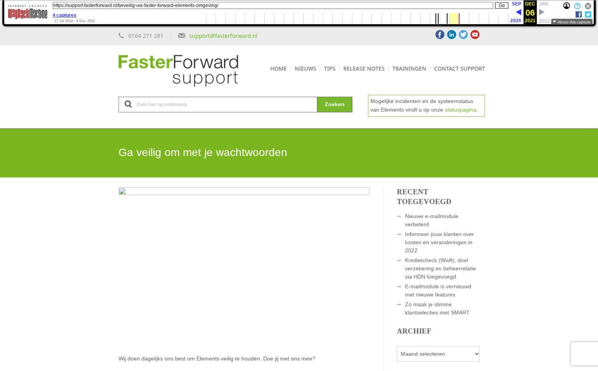

Verbeteringen Uwkluis, schademelding, Finly en zwevende actieknoppen

Tekstinhoud
Op dinsdag 18 februari zijn Elements en eBlinqx weer verbeterd en uitgebreid met nieuwe features. Deze release bevat onder andere verbeteringen van Uwkluis, de schademelding en de koppeling met Finly. Ook zijn er nieuwe features alleen voor eBlinqx, bijvoorbeeld de actieknoppen die mee scrollen in het beeld.
eBlinqx Only
Actieknoppen scrollen mee in beeld
Rapportage gekoppelde dienst
Elements en eBlinqx
Koppeling Finly verbeterd
Formulieren vanuit zakelijke dossiers opvragen
Ophalen formulieren gekoppeld aan account
Verbeteringen Uwkluis
Adviseur getoond in alle producten
Verzoeken verduidelijkt
Verbeteringen werkmaterieel
Handmatig prolongeren uitgebreid
Verbeteringen schademelding
Interne notitie en andere velden toegevoegd
Veld Omschrijving verplaatst
Oorzaak aangepast naar schadeclassificatie
Labels Dynamic Hypotheken
Overige verbeteringen
eBlinqx Only
Actieknoppen scrollen mee in beeld
Let op: alleen beschikbaar in eBlinqx
Vanaf nu zweven de actieknoppen, waaronder de knop voor opslaan en aanmaken, mee op bijna iedere pagina. Op deze manier hoef je niet iedere keer omhoog te scrollen om bijvoorbeeld de wijzigingen op te slaan. Let op: dit geldt alleen voor de actieknoppen en niet voor de knoppen waarin de actie als tekst staat.
Scrollen wel mee op pagina
Scrollen niet mee op de pagina
Om dit ook te laten werken bij het aanmaken en wijzigen van een polisonderdeel in een schadeverzekering zijn hier de knoppen aangepast van tekst- naar actieknoppen.
Rapportage gekoppelde dienst
Let op: alleen beschikbaar in eBlinqx
In de vorige release is het mogelijk gemaakt om een product aan de dienst te koppelen. Om deze dienst en het gekoppeld product goed in beeld te brengen is er een nieuwe rapportage, CRM – Pijplijn met gekoppelde dienst, gemaakt. Op deze manier kan je verbanden leggen tussen inkomsten van een bepaalde dienst en ook wanneer je het geld kunt verwachten.
Elements en eBlinqx
Koppeling Finly verbeterd
Formulieren vanuit zakelijke dossiers opvragen
Vanaf nu is het ook mogelijk om formulieren vanuit zakelijke dossiers op te vragen bij Finly. Voorheen moest er in het dossier een natuurlijke persoon aanwezig zijn om formulieren op te vragen. Dit is niet langer nodig. Het kan nu ook als er een organisatie staat opgevoerd in het dossier.
Ophalen formulieren gekoppeld aan account
Vanaf nu worden alle formulieren die gekoppeld zijn aan het Finly-account opgehaald in het dropdownmenu in het tabblad en in de workflow. Op deze manier heb je alle formulieren tot je beschikking. Eerst werd hier een vaste en generieke lijst getoond.
Verbeteringen Uwkluis
Adviseur getoond in alle producten
In Uwkluis wordt nu per product de adviseur getoond. Mochten er meerdere adviseurs betrokken zijn dan kan de klant direct zien bij wie hij moet zijn met vragen over een product. In Beheer – Organisatie & Personen moet deze persoon en zijn gegevens wel op publiek staan om getoond te worden.
Verzoeken verduidelijkt
In Uwkluis wordt nu bij het verzoek voor opvragen brondata en het invullen van een formulier de naam van degene voor wie het verzoek is getoond. Zo kan de klant gemakkelijk zien welk verzoek voor hem is en welk verzoek voor zijn partner.
Verbeteringen werkmaterieel
De weergave van werkmaterieel is verduidelijkt. Indien er onder een product één werkmateriaal is opgevoerd onder de branche 035 landbouwmaterieel dan komt nu, naast soort en merk type, het kenteken in de polisomschrijving te staan.
Op de startpagina wordt bij het uitklappen van het pakket nu alle materieel getoond in plaats van maximaal twee materiaal. Ook hier wordt nu per materiaal de soort, merk, type en kenteken weergegeven.
Handmatig prolongeren uitgebreid
Posten die handmatig geprolongeerd worden, komen te staan in de module Handmatig Prolongeren. Deze module is uitgebreid met de kolom 'Provisie' en het veld 'Totaal' is toegevoegd. Zo heb je nog meer informatie over de handmatig geprolongeerde posten.
Verbeteringen schademelding
Interne notitie en andere velden toegevoegd
In de schademelding zijn er diverse velden toegevoegd, waaronder een tekstveld voor interne notities. Hiernaast zie je welke velden er nog meer zijn toegevoegd.
Velden
De optie 'Onbekend' is toegevoegd aan de velden:
– Aangifte bij politie
– Expertisebureau ingeschakeld
– Letselschade
– Coulanceschade
Referentienummer agent
Eigen risico bedrag (per schadeverzekering, niet per dekking)
Schadelocatie
Interne notities
Toegevoegde velden schademelding
Veld Omschrijving verplaatst
Vanaf nu staat het veld Omschrijving en Interne notitie bovenaan in de schademelding, wanneer je deze opent of bewerkt. Zo kan je direct zien welke informatie hier staat. Voorheen stond het veld Omschrijving onderaan in de schademelding bij het openen of het bewerken hiervan. Bij het aanmaken van een nieuwe schademelding staan deze velden nog steeds onderaan in de schademelding.
Oorzaak aangepast naar schadeclassificatie
In het veld 'Oorzaak' worden niet langer meer de oorzaken getoond in het dropdownmenu maar de schadeclassificaties. Dit is een vaste lijst die wordt opgehaald. Het is niet langer meer mogelijk om de oorzaken zelf te beheren via de module Beheer – Schademelding oorzaken. Na de release komt datgene wat als oorzaak was aangemerkt in het veld 'Interne notitie' te staan.
Labels Dynamic Hypotheken
Dynamic heeft meerdere labels, waaronder Dynamic Verhuurhypotheek en Dynamic Lekker Wonen (Dynamic Hypotheken). Deze labels hebben hun eigen producten, eigen HDN certificaatnummer en eigen HDN maatschappijcode. Om de hypotheekaanvraag bij het juiste label te krijgen is het belangrijk dat deze labels correct staan ingericht. Op de meeste klantomgevingen staat alleen Dynamic Verhuurhypotheek (onder de naam Dynamic) inclusief producten ingericht. Daarom willen we op 19 februari 2025 via de updateknop Dynamic Hypotheken (Lekker Wonen) inclusief producten klaar zetten, zodat je deze kunt installeren. In dit artikel lees je er meer over.
Overige verbeteringen
De rapportage Management – Pijplijn informatie is uitgebreid met de kolommen 'Verzenddatum opdrachtbevestiging' en 'Ontvangstdatum getekende opdrachtbevestiging'. Aan de rapportage Beheer – Aanstellingen per kantoor is de kolom 'AFM-vergunningsnummer' toegevoegd. Wil je deze kolommen zien, zet ze dan aan in Rapportagebeheer
Wij hebben diverse verbeteringen voor onze interne conversietool doorgevoerd. Hierdoor wordt de doorstroom van de conversies verbeterd
Voor het ophalen van e-mail draait er een proces. De afdeling Support wordt vanaf nu erop geattendeerd als dit proces vastloopt, zodat er direct actie ondernomen kan worden
Bij het automatisch censureren wordt nu ook de QR code automatisch zwart gemaakt
Geplaatst op 14 februari 2025 (Laatste update: 18 februari 2025)
Laatste 5 releasenotes
Nog meer data en documenten vergelijken »
Gemakkelijk data en documenten vergelijken »
Verbeteringen boekhouding en facturatie »
Verbeteringen gespreksopname en onder de motorkap »
Verbeteringen onder de motorkap en gespreksopnames »